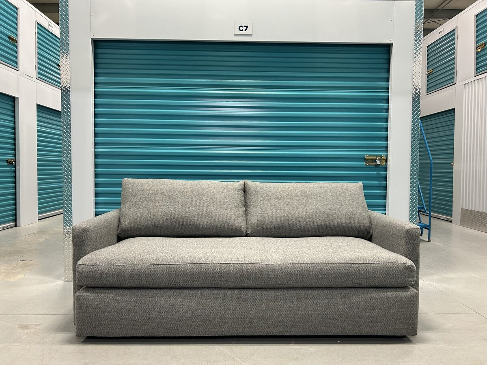
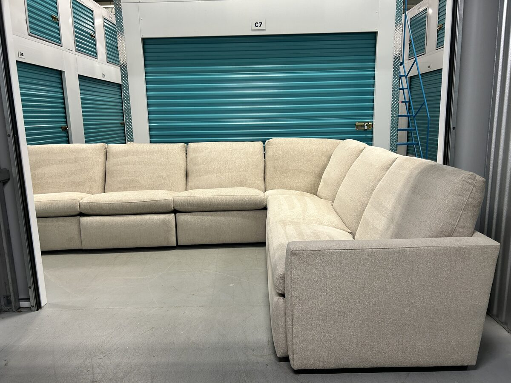

Crate & Barrel is one of the few brands in its price range with its own store in Edmonton, so many people here have sat on a Gather or a Lounge before they come across one used. If you’re shopping for a used sofa in Edmonton and find one, the useful questions are where it was made, how it’s built, what it costs new, and what to check before you buy.
We’ve bought pieces from four Crate & Barrel collections: a Gather 99-inch Deep sofa and a Gather 89-inch Wood Base bench sofa, a Rochelle sofa and chair set, a matched pair of Lounge 83-inch bench sofas and a Lounge six-piece power reclining sectional, and an Aris two-piece bench sectional. This guide draws on those pieces and on what Crate & Barrel publishes about how it builds them. It covers the Edmonton store, where the sofas are made, how they’re built, what they cost new in Canada, how they compare with other brands, and what to check on a used one.
Available from Crate & Barrel in Edmonton right now: Lounge 6-Piece L-Shaped Power Dual-Reclining Sectional — Mossa Chenille ($7,800 CAD); Gather 89-Inch Wood Base Bench Sofa — Tribute Gravel ($2,100 CAD).
Is There a Crate & Barrel in Edmonton?
Yes. Crate & Barrel’s Edmonton store is at Southgate Centre, 5015 111 St NW, and has been open since 2011. As of October 2026, Crate & Barrel listed five stores in Canada: Southgate in Edmonton, Southcentre Mall in Calgary, Oakridge Park in Vancouver, Square One in Mississauga, and Yorkdale in Toronto. Southgate is the only one in the Edmonton area; there is no store in Sherwood Park or St. Albert. Everything is also sold through crateandbarrel.ca.
The store is useful even if you’re buying used. Each sofa page on crateandbarrel.ca has an “On Display in My Store?” check, so you can see whether the model you’re considering is on the floor at Southgate. Sitting on a new one tells you how firm the seat should feel, which helps you judge cushion wear on a used one. Crate & Barrel also sends up to 10 free fabric swatches, which can help you identify the fabric on a used piece and compare its colour with new.
A Brief History of Crate & Barrel
Gordon and Carole Segal opened the first Crate & Barrel on December 7, 1962, in a former elevator factory on North Wells Street in Chicago’s Old Town. They had seen well-designed, inexpensive housewares in Europe on their honeymoon and wanted to sell them at home. The name came from the shipping crates and barrels the goods arrived in, which they used as their first fixtures.
Germany’s Otto Group bought a controlling interest in 1998, and the company is headquartered in Northbrook, Illinois. In 2000 it launched CB2, a sister brand with a more modern, generally lower-priced range. CB2 is sold separately, so a CB2 piece isn’t a Crate & Barrel piece; check its construction on its own terms.
Where Are Crate & Barrel Sofas Made?
The best-known collections are made in the U.S. As of October 2026, crateandbarrel.ca described the Gather, Lounge, and Aris as “Made in the USA of Domestic and Imported Materials” and benchmade, meaning each frame is built by hand at a workstation rather than on an automated line. All three are Crate & Barrel exclusives, not sold by other retailers.
The law tags on the pieces we’ve bought say more than the website does. The tag on our Gather named Design Foundry in Hickory, North Carolina. The tags on the matched pair of Lounge sofas list a production address in Conover, North Carolina. The Aris tag reads “Made for Crate & Barrel” at the company’s headquarters in Northbrook, Illinois, and also names a second company, Max Home, LLC.
Crate & Barrel states where each product is made on its own page, so for a particular piece, check that page’s “Made in” line or the law tag rather than assuming one collection’s origin applies to another.

How Crate & Barrel Sofas Are Built
Construction differs by collection, and Crate & Barrel publishes it on each product page. The table shows the four collections we’ve bought, from crateandbarrel.ca as of October 2026. The Rochelle is no longer listed there, so its details come from the set we bought.
| Collection | Seat cushions | Back cushions | Suspension |
|---|---|---|---|
| Gather | Innerspring, polyfoam, fibre | Fibre | Sinuous springs |
| Lounge | Polyfoam, fibre and feather-down | Fibre-down | Flexolator foundation |
| Aris | Polyfoam, feather-down blend | Polyfibre blend | Not listed |
| Rochelle | Soy-based polyfoam, fibre | Fibre blend | Sinuous springs |
Frames. All four use kiln-dried hardwood frames, dried to keep the wood from warping. The Gather’s is FSC-certified engineered hardwood. Every Crate & Barrel frame we’ve bought has been solid, including the Rochelle’s at eight years old, with no flex and no noise under pressure. Our guide to judging sofa quality covers how to check a frame yourself.
Suspension. On the Rochelle we could see the sinuous springs through its thin dust cover. The Gather we bought had a heavier black dust cover that hid the springs, which Crate & Barrel lists as sinuous wire. The Lounge uses what Crate & Barrel calls a spring-up Flexolator foundation, which it says is independently tested and designed to prevent sagging.
Cushions. The Gather is the unusual one. Its seat cushions have an innerspring core, like a mattress, wrapped in polyfoam and fibre, so they spring back rather than slowly recovering, and they account for much of the sofa’s weight. Its back cushions are loose fibre in ticking, light and pillow-like. The Rochelle’s foam seats are firmer and more structured. The Gather is made for lounging; the Rochelle for sitting upright.
Legs and bases. The Gather we bought sat on short, round, low-profile legs that screw off; the Gather is now also sold on a full wood base and with several leg options. The Rochelle stands on tall, tapered solid-wood legs, which define its mid-century look and also screw off.
Gather, Lounge, Aris, or Rochelle?
The four collections we’ve bought share a brand but sit very differently, so it helps to know which one suits the room before you look at listings.
Gather is the plush one: boxy, extra-padded seats on innerspring cushions, offered in regular and deep versions, on legs or a wood base. It anchors a room by size and suits people who want to sink in and lounge.
Lounge has medium-depth seats, slim track arms, and feather-down-wrapped cushions. It comes in many forms, from bench-seat sofas to sleepers, deep versions, and modular power reclining sectionals, so a used Lounge can mean very different pieces.
Aris is lower and more compact, with bench seats, neat track arms, and two bolster pillows. It suits smaller rooms.
Rochelle is tailored and mid-century, with track arms and tall tapered wood legs, built for sitting upright rather than lounging. It’s no longer listed on crateandbarrel.ca, so a used one is the only way to get one, and its date tag matters more for judging age.
What Crate & Barrel Costs New in Canada
On crateandbarrel.ca on October 13, 2026, regular prices (before sales) for the collections we’ve bought were:
| Model | As priced | Price CAD |
|---|---|---|
| Lounge 83″ Bench Sofa | 41″ deep, Mossa | $3,057 |
| Aris 88″ Bench Sofa | 37.5″ deep, Thrive | $3,099 |
| Gather Deep 89″ Sofa | 43″ deep, Icon | $3,399 |
| Gather Wood Base 89″ Sofa | 38″ deep, Icon | $3,999 |
| Lounge 6-Piece Power Sectional | 142″ × 109″, Taft | $13,144 |
Some were on sale that day; the Lounge sofa, for example, was 15% off. Prices change with size, depth, and fabric: the Gather Wood Base alone came in three sizes, two depths, bench or multi-cushion seats, and 249 fabrics. Two used Gathers can differ in width, depth, comfort, and cover, so check the tag and measure before you compare one listing with another or with the new price.

How Crate & Barrel Compares to Other Brands Edmonton Buyers Consider
From each brand’s own site as of October 2026; our guides to each brand go into more detail.
| Brand | In Edmonton | Where sofas are made | Style |
|---|---|---|---|
| Crate & Barrel | Store at Southgate | USA (Gather, Lounge, Aris) | Contemporary |
| Pottery Barn | No store; nearest in Calgary | Some in North Carolina; others imported | Classic, deep-seated |
| EQ3 | Sold through F2 Furnishings | Custom upholstery in Winnipeg | Modern |
| Rove Concepts | No showroom; sold online | Vietnam, Malaysia, China, and elsewhere | Low, modular |
Crate & Barrel vs. Pottery Barn
The most natural cross-shop. Pottery Barn has no Edmonton store; its nearest is at Chinook Centre in Calgary. Its parent company owns an upholstery maker, Sutter Street, in North Carolina, and Pottery Barn’s product pages say which pieces come from there; others are imported, including the Turner leather sofa we bought, which was labelled Made in China. Pottery Barn leans classic, with deep, soft seating, while Crate & Barrel runs cleaner and more contemporary. A top line from either can out-build an entry line from the other, so compare the specific models’ frames, suspension, and cushions.
Crate & Barrel vs. EQ3
EQ3 builds its custom upholstery at its Winnipeg headquarters and sells in Edmonton through F2 Furnishings. Both brands use kiln-dried hardwood frames, and both lean modern. The EQ3 Replay we bought was even heavier than our Gather, so weight alone doesn’t separate them. Compare the models’ published construction and sit on both if you can.
Crate & Barrel vs. Rove Concepts
Rove Concepts is a Vancouver brand that sells mostly online, with no showroom in Edmonton, and says its furniture is made in Vietnam, Malaysia, China, and elsewhere. Rove’s Milo page lists a kiln-dried hardwood frame, sinuous springs, and three layers of high-density foam topped with 100% goose feathers. Crate & Barrel’s Lounge and Aris also pair foam seats with a feather-down blend, so the fill alone doesn’t separate them. The practical difference for Edmonton buyers is that you can try a Crate & Barrel model at Southgate before you buy, new or used.
Crate & Barrel vs. Restoration Hardware
RH also sells at Southgate, through its own gallery, and its sofas generally cost more than Crate & Barrel’s. Compare the specific models: frame, suspension, cushion fill, and cover, and the price for the same size.
What We’ve Learned From the Crate & Barrel Pieces We’ve Bought
The Gather is heavy for a reason
The Gather 99-inch Deep sofa we bought took planning to move. The weight comes from the innerspring seat cushions, the hardwood frame, and the size of the piece. Those cushions are also why it was one of the most comfortable sofas we’ve had: they have the give and recovery of a good mattress rather than the slow sink of foam.
Performance fabric and pilling
Most of the Crate & Barrel pieces we’ve bought were in its performance fabrics: Tribute, a 100% polyester twill, on both Gathers; Taft Everweave, 70% polypropylene and 30% polyester, on the Lounge pair; and Thrive, 97% olefin and 3% polyester, on the Aris. “Performance” means a fabric resists stains and cleans easily. It doesn’t mean the surface won’t pill or fade, so judge a used piece on the condition of its own fabric rather than the fabric’s name.
Pilling is the most common thing to look for. It can happen on any upholstery fabric, performance fabrics included, where hands, legs, and clothing rub: seat fronts, arm tops, and back cushions. The Tribute twill on the Gather we resold had some pilling from everyday family use, which we removed before resale. Regular vacuuming with an upholstery brush helps prevent it by lifting loose fibres before they ball up, and a fabric shaver removes pills that do form. On a used piece, run your hand across the seat and arms in good light to see how the fabric has been kept.
The Rochelle’s sun fading hid well
The Rochelle set we bought was eight years old, with a solid frame, cushions holding up, and fabric intact. What we didn’t catch at first was sun fading. It wasn’t obvious at a glance, and in photos we had to find the right angle to show it. Only on closer inspection did the full extent show: one side noticeably lighter than the other, the kind of gradual fade that builds up over years near a window.
On any used fabric sofa from a bright room, look at the cushions in natural light from several angles, and compare the sides that faced the window with the sides that didn’t. A fade that looks even in a listing photo may not be.

A matched pair, and what the label shows
The Lounge came to us as a matched pair: two identical 83-inch bench sofas from a home in the Lacombe Park neighbourhood of St. Albert, bought together through our sell form. Both tags read identical: Style 1670-S1B, Fabric Taft Steel, the same Ack/Line batch numbering. The label prints a Date of Delivery, May 21, 2024, barely two years before pickup, rather than a manufacture date. The tags on the Lounge sectional we bought later print delivery dates too, while our other Crate & Barrel tags show a manufacture date.
The Lounge’s seat cushion uses a two-chamber construction, an inner foam chamber and a separate outer chamber of blended fibre and waterfowl feathers. The Aris’s seats are polyfoam with a feather-down blend, covered below.
The Lounge as a power reclining sectional
We’ve since bought a Lounge in its six-piece L-shaped power dual-reclining configuration: a power recliner at each end, three armless chairs, and a corner, 142 by 109 inches overall. Crate & Barrel describes the recliners as operated by buttons on the inside arm, with a “wall-hugging” mechanism that slides the seat forward as it reclines, so the sectional can sit right against a wall. Each power chair has a 7-foot cord, so plan the layout around your outlets. The cushions and foundation match the stationary Lounge.

The Aris next to the Lounge
The Aris reads smaller in person than the Lounge. The Aris we bought stands 31.25 inches high at the frame and 32.5 inches over the back cushions; the Lounge is 37 inches high overall. Overall depth is 37.5 inches on the Aris (its regular depth) and 41 inches on the Lounge. On price, there was almost no gap: on October 13, 2026, the Aris 88-inch bench sofa listed at $3,099 regular in Thrive and the Lounge 83-inch bench sofa at $3,057 in Mossa.
The bigger difference is in the back cushions. The Aris’s law tag lists the back cushion fill as 100% polyester fibre, with no down or feather blend. In the sit test the seats felt only marginally different between the two; the back cushions are where we noticed the difference.
The frame gave nothing under pressure, the same as every other Crate & Barrel piece we’ve bought.
What to Look For in a Used Crate & Barrel


The label and the date. Look under the seat cushions for the Crate & Barrel label and the law tag. On the pieces we’ve bought, the date was easy to find, usually on a sticker under the centre seat cushion: a manufacture date on most, a delivery date on the Lounge. The tag also names the style and fabric, which you can match on crateandbarrel.ca. Knowing the age tells you whether the wear makes sense: compression on a five-year-old sofa means something different from the same compression on a twelve-year-old one. Our guide to what furniture condition means lays out the grades.
Fabric in natural light. Sun fading often doesn’t show in listing photos. Ask for photos taken in daylight from several angles, and at the viewing, look at every cushion surface, especially the backs and any side that faced a window.
Pilling. Run your hand across the seats, arm tops, and cushion fronts in good light. Pilling is a surface issue, not a structural one, and it can be shaved, but it tells you how the fabric is wearing. Weigh it when you judge whether the asking price is fair.
The frame. Push on the arms and back, and sit at each end. Listen for creaks and feel for looseness or a wobble. A sound frame stays quiet and still; if it moves, something has loosened or broken, so find out what before you go further.
The cushions. Fluffing alone can’t tell you much about a cushion. Unzip one if the seller allows and look at the core, then sit on each seat: it should support you evenly without bottoming out. A Gather’s innerspring seat should feel springy and resilient; a foam seat should rebound when you stand. A core that stays flat needs replacing, so count that cost when you judge the price.
Legs or base. On tall wood legs like the Rochelle’s, check that all four are present, seated properly, and not cracked. On short legs or a wood base, check that the piece sits level. Screw-on legs can be replaced, but it’s better to know before delivery day.
Power recliners. On a power piece like the Lounge reclining sectional, plug in each power seat and run it through a full recline and back. Check the buttons and the cords, and make sure every power supply comes with the piece.
Modular and sectional pieces. Check that the sections line up and connect securely, that every piece is there, and that the configuration fits your room. Our guide to measuring a sectional covers doorways, stairs, and layouts.
Is Crate & Barrel Good Quality?
On the pieces we’ve bought, yes. Of the brands we buy, Crate & Barrel is fairly consistently the most comfortable, and the Gather and Lounge in particular are comfortable sofas, deeper than typical sofas. Every frame was solid, including the Rochelle’s at eight years old, and the cushions held their shape for their age. The Gather, Lounge, and Aris are benchmade in the U.S. on kiln-dried hardwood frames, and Crate & Barrel publishes their cushion construction, so you can see what you’re buying. The variable on a used piece is the upholstery: look for pilling and for sun fading, which on the Rochelle was easy to miss. Judge a used piece on its label, frame, cushions, and fabric, and compare it with the new price of the same model.
Selling a Crate & Barrel Sofa or Sectional
We buy Crate & Barrel sofas and sectionals. Send photos and details through our Crate & Barrel page; we aim to reply the same day. If the piece is a fit, we make an offer based on its model, age, and condition and explain how we got to it. Pickup is included in the offer, with no separate pickup fee. Once you accept, we schedule pickup with you, our crew collects it in an enclosed truck, and you’re paid by cash or e-transfer before it leaves your home.